- To create a game enter your nickname and click "Create Game".To create a game enter your nickname and click "Create Game".
- Share the game id with your friends.
- To join a game enter your nickname and the game id your friend provided and click "Join Game".
- After all your friends have joined, click "Start Game".
- Yeah! It's that simple.
The deck consists of 108 cards: four each of "Wild" and "Wild Draw Four", and 25 each of four colors (red, yellow, green, blue). Each color consists of one zero, two each of 1 through 9, and two each of "Skip", "Draw Two", and "Reverse". These last three types are known as "action cards".
Wild & Wild Draw Four Cards:
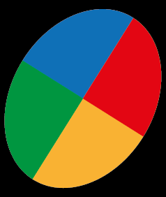
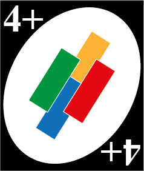
Red Number Cards:
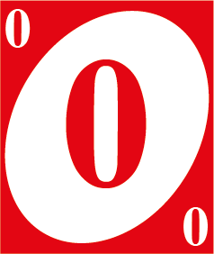
 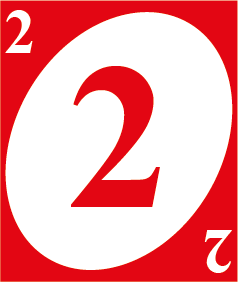
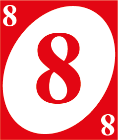
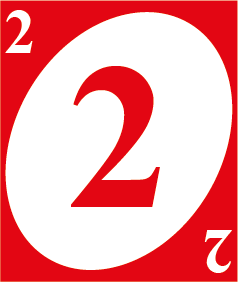
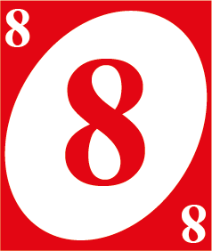
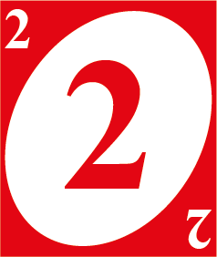
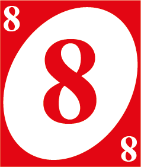
Yellow Number Cards:
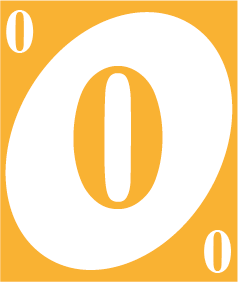
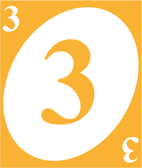
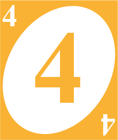
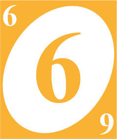
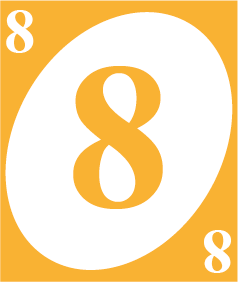
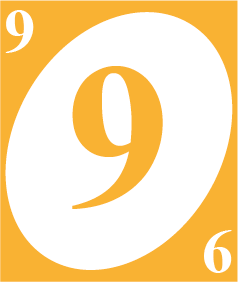
Green Number Cards:
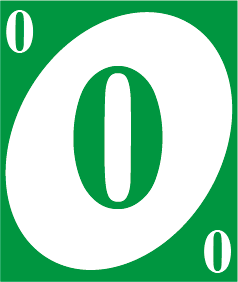
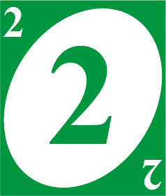
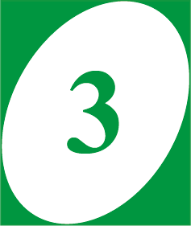
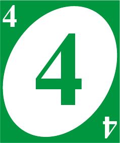
 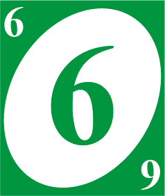
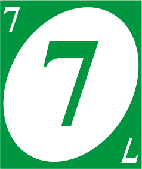
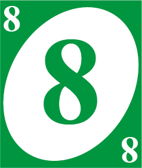
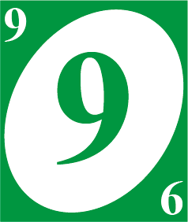
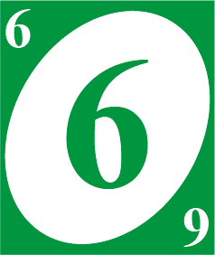
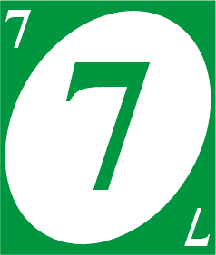
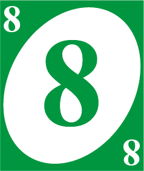
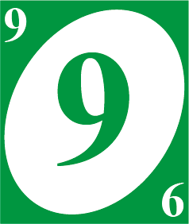
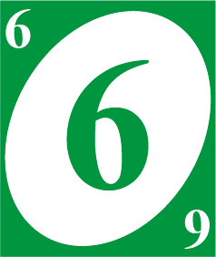
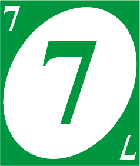
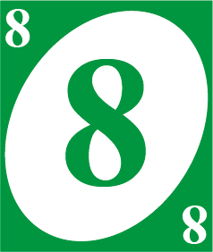
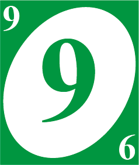
Blue Number Cards:
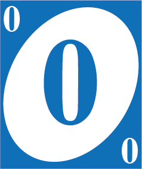
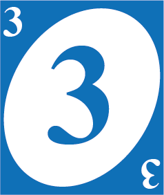
 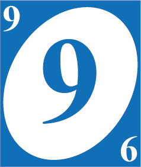
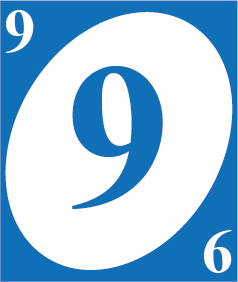
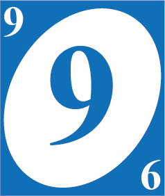
Skip Cards:
Reverse Cards:
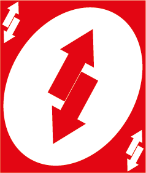
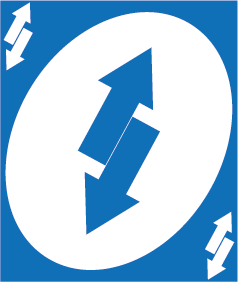
Draw Two Cards:
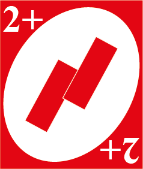
 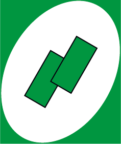
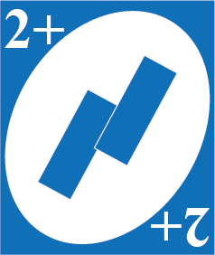
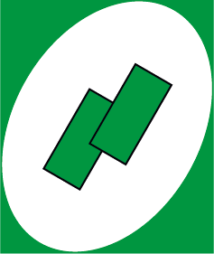
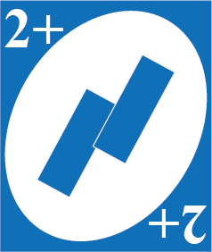
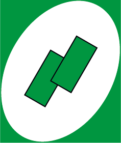
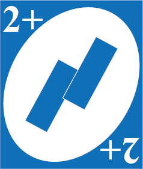
To start a hand, 10 cards are dealt to each player, and the top card
of the remaining deck is flipped over and set aside to begin the discard
pile. Cards are played by laying them face-up on top of the discard pile.
Play proceeds clockwise around the table.
On a player's turn, they must do one of the following:
- play one card matching the discard in color, number, or symbol
- play a Wild card, or a Wild Draw Four card
- draw the top card from the deck, then play it if possible
Action or Wild cards have the following effects:
| Card | Effect when played from hand |
|---|---|
| Skip | Next player in sequence misses a turn |
| Reverse | Order of play switches directions (clockwise to counterclockwise, or vice versa) |
| Draw Two (+2) | Next player in sequence draws two cards if he has no Draw Two cards or Wild cards |
| Wild | Player declares the next color to be matched (may be used on any turn even if the player has matching color; current color may be chosen as the next to be matched) |
| Wild Draw Four/Draw Four Wild (+4 and wild) | Player declares the next color to be matched; next player in sequence draws two cards if he has no Draw Two cards or Wild cards |
- A player who draws from the deck must play or keep that card and may play no other card from their hand on that turn.
- A player may play a Wild card at any time, even if that player has other playable cards.
- A player may play a Wild Draw Four card at any time, even if that player other cards matching the current color. The player may have cards of a different color matching the current number or symbol or a Wild card and still play the Wild Draw Four card.
- If the entire deck is used during play, the top discard is set aside and the rest of the pile is shuffled to create a new deck. Play then proceeds normally.
- A player who plays their next-to-last-card must call "uno" as a warning to the other players. Or else that player has to draw 2 cards as a penalty.
- The first player to finish all cars on hand wins.